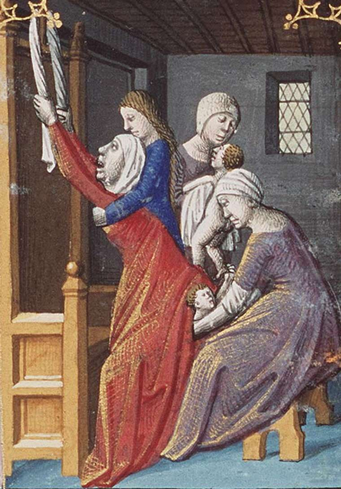

Quando pensamos sobre os papéis desempenhados por mulheres na
sociedade, comumente atribuímos e pensamos em funções consideradas
secundárias e passivas ou relacionadas a atividades relacionadas ao lar e à
maternidade. Ao pensar a respeito dessa atuação durante a Era Medieval não é
diferente, já que além de ser uma temática pouco instigada a ser pensada, há
obstáculos ao tentar traçar esse protagonismo feminino, isso porque grande parte
da comunidade que sabiam ler e escrever em latim (língua predominante desse
período) eram homens, assim como o acesso às universidades (surgidas no século
XIII) e o conhecimento que eram produzido nelas, se destinavam ao público
masculino. Assim, devido a essa falta de acesso à educação pelas mulheres, há
dificuldades de encontrar relatos produzidos por elas e sobre o seu protagonismo

Representação de uma mulher durante um parto natural dando a luz em posição vertical sob ajuda das matronas. Fonte: site, Tendências do Imaginário
Apesar disso, os conventos e mosteiros vão ser locais que vão proporcionar
meios educacionais a essas mulheres, tanto na arte, música, e teologia, como
também na área medicinal, a qual será destacada a seguir. Há evidências da
atuação das mulheres no meio medicinal desempenhando funções como médicas,
boticárias, cirurgiãs e parteiras, como também na elaboração de remédios caseiros
para as mazelas do corpo, a qual Hildegarda de Bingen, que trataremos em
seguida, irá se destacar. Entretanto, geralmente as mulheres se dedicavam a
questões mais voltadas à saúde feminina - atualmente na área médica é chamada
de Ginecologia, porém, durante a Era Medieval não havia-se essa denominação,
como também ainda não era uma área consolidada, o que ocorria eram práticas
análogas a essa ciência medicinal - como a questões relacionadas à menstruação,
à gravidez, ao aleitamento e aos partos.
Ainda que essas mulheres fossem letradas nesses ambientes eclesiásticos,
os saberes e práticas medicinais utilizadas eram aprendidas, comumente, entre
gerações por meio do conhecimento empírico, ou seja, através da observação.
Dessa forma, as mulheres mais velhas, que geralmente possuiam mais
conhecimentos, relatavam as suas experiências e eram observadas em ação para
que ocorresse a aprendizagem, principalmente quando se tratava dos partos.
Em relação aos partos, quando se tratava do parto natural ou “normal” como
é nomeado no cotidiano, normalmente ocorriam nos domicílios em camas, porém
em algumas situações as mulheres davam à luz em posições diferentes, como em
pé ou sentadas em cadeiras, por acreditarem ser mais fácil. Além disso,
dependendo da classe social e do poder econômico da mulher, eram realizadas
preparações no quarto antes do nascimento da criança. Nas cortes era comum
decorá-los com tecidos nas paredes, já as camponesas, as quais não possuíam
tanto poder aquisitivo, algumas colocavam representações da Virgem Maria e do
menino Jesus próximo a cama que aconteceria o nascimento.
Representação de um parto cesáreo realizado no pós-mortem por um médico e uma parteira
Já os partos cesarianos, eram realizados apenas em situações extremas,
geralmente quando a saúde feminina já estava comprometida ou em situações de
pós-mortem, ou seja, quando a mulher já havia morrido. Por isso, em grande parte
das representações existentes a mulher é representada com os olhos fechados, um
aspecto desfalecido e despida, além disso, é apresentada em um ambiente que
remete a um local hospitalar.
Assim, apesar das práticas ocorrerem de formas diferentes, vê-se nas
representações a presença das mulheres durante esses nascimentos atuando como
parteiras (chamadas de matronas a depender da documentação) e também a
presença de homens atuando como médicos. Por mais que as mulheres atuassem
mais no meio médico feminino, os homens ainda atuavam com maior predominância
do que as mulheres devido, como já foi citado acima, ao acesso aos aprendizados
que lhe eram proporcionados e também por serem favorecidos pelo regimes de
gênero da época que permitiam que eles exercessem profissões com maior
facilidade.